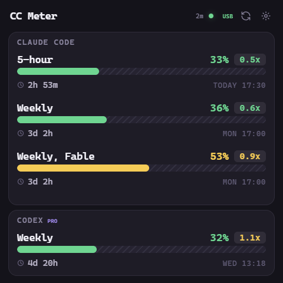

Swipe left or right on the panel (or drag with the mouse) to switch between CC Meter and the focus timer. Tap the big button to start or pause. Sounds play on the PC through the CC Meter app; this page plays the same sounds.
